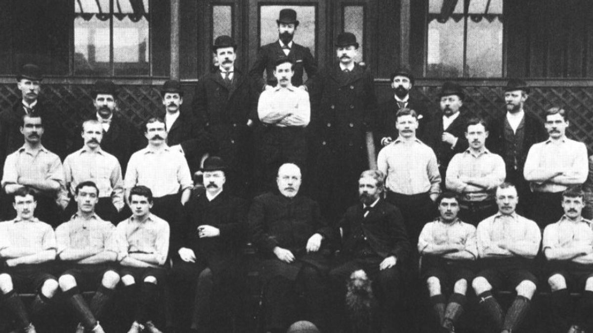
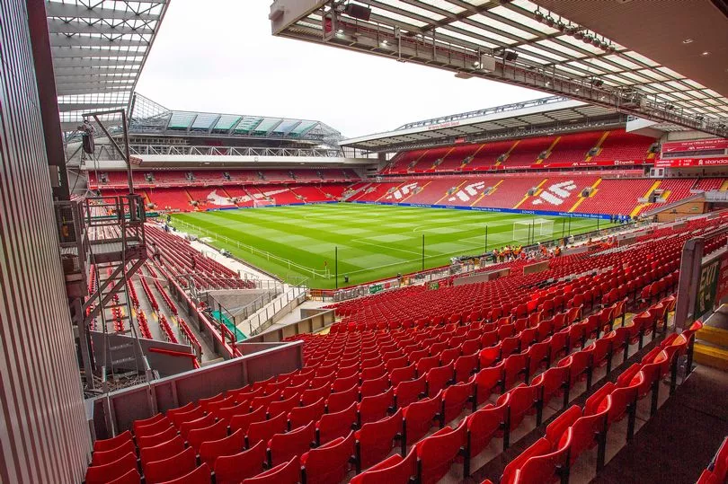

Sejarah

Klub Sepak Bola Liverpool adalah salah satu klub sepak bola paling terkenal dan sukses di dunia. Klub ini didirikan pada tahun 1892 dan bermarkas di Anfield, Liverpool, Inggris.
Sejarah Liverpool dimulai pada tahun 1892 ketika klub ini didirikan oleh John Houlding, seorang pengusaha lokal yang memiliki lapangan sepak bola di Anfield. Klub ini awalnya bernama Everton FC dan pada awalnya hanya bermain di level amatir.
Namun, pada tahun 1893, klub mengalami perpecahan dan John Houlding membentuk klub baru yang diberi nama Liverpool FC.
Liverpool FC berhasil meraih kesuksesan besar pada tahun 1960-an dan 1970-an di bawah manajer legendaris Bill Shankly. Pada periode ini, klub memenangkan tiga gelar Liga Inggris, dua Piala FA, dan satu Piala UEFA.
Stadion Anfield

Anfield adalah nama stadion yang terletak di kota Liverpool, Inggris.
Kapasitas Stadion Anfield sebanyak 54.074 tempat duduk yang membuatnya menjadi stadion terbesar ketujuh di Inggris.
Stadion Anfield merupakan kandang bagi klub sepak bola Liverpool F.C. sejak klub didirikan pada tahun 1892.
Stadion ini awalnya merupakan kandang dari klub Everton F.C. dari tahun 1884 hingga 1892 sebelum Everton pindah ke stadion Goodison Park setelah berselisih dengan pemilik klub.
Stadion ini memiliki empat tribun: Spion Kop, Tribun Utama, Tribun Sir Kenny Dalglish dan Anfield Road End.
Rekor kehadiran penonton sebanyak 61,905 diraih saat pertandingan antara Liverpool melawan Wolverhampton Wanderers pada tahun 1952.
Stadion ini berubah menjadi stadion tempat duduk pada tahun 1994 karena hasil Laporan Taylor, yang sekaligus mengurangi kapasitas stadion.